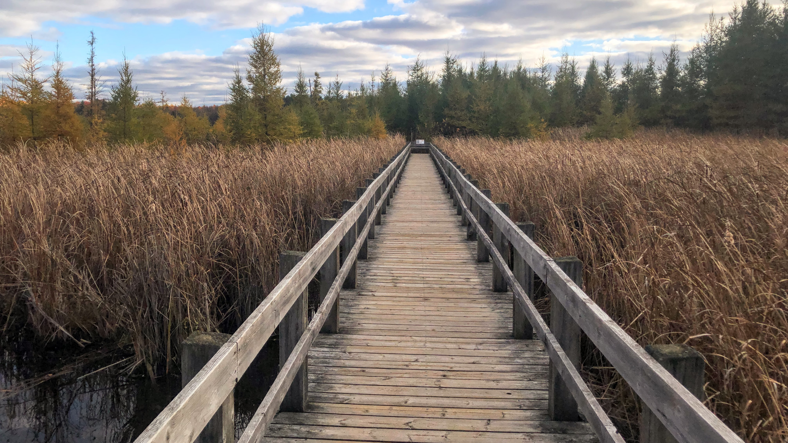

It's your neighborhood journalism in the flesh! I'm practicing coding :) As you can see this is my beautiful backyard.
I love dogs but I'm allergic to them. Very sad about that :(
Here is other things about me:
Here is a nice photo of a boardwalk. Sadly, I didn't take a photo of this :( Not pro picture taker. I really like hikes though!
me omw to finish my island now I know that Brewster is coming pic.twitter.com/E1C8RPPe33
— lunabug 🌙 (@crossingsluna) September 23, 2021